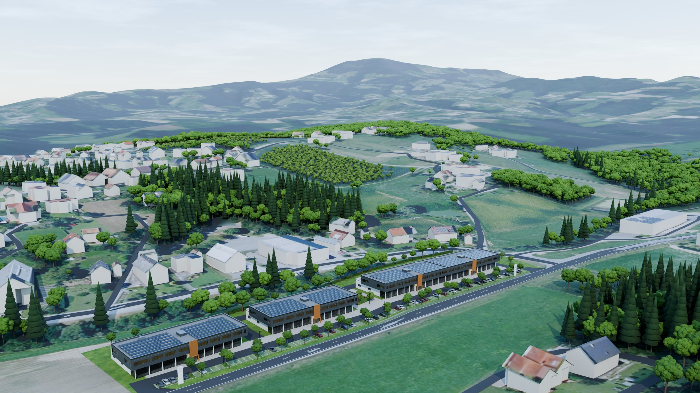
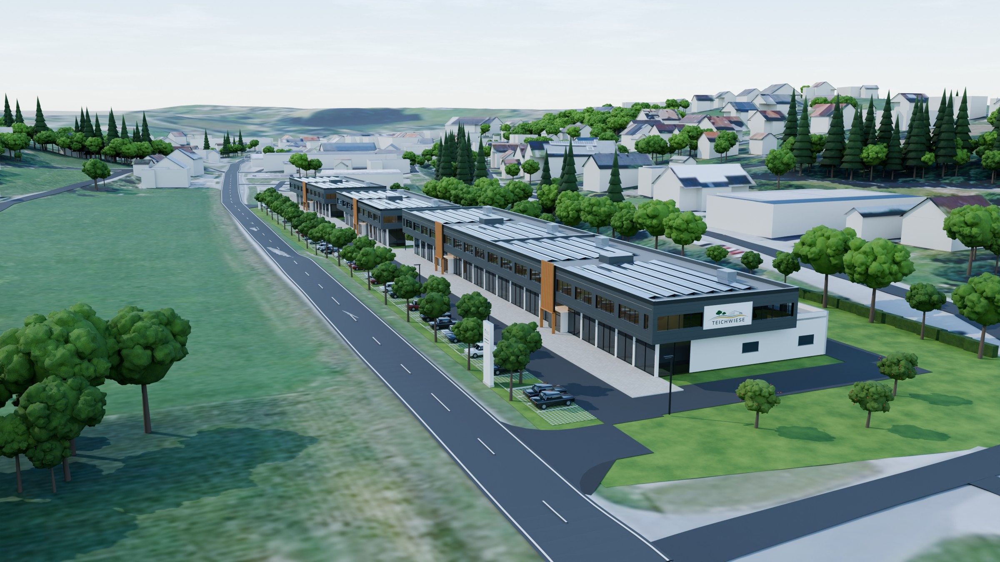
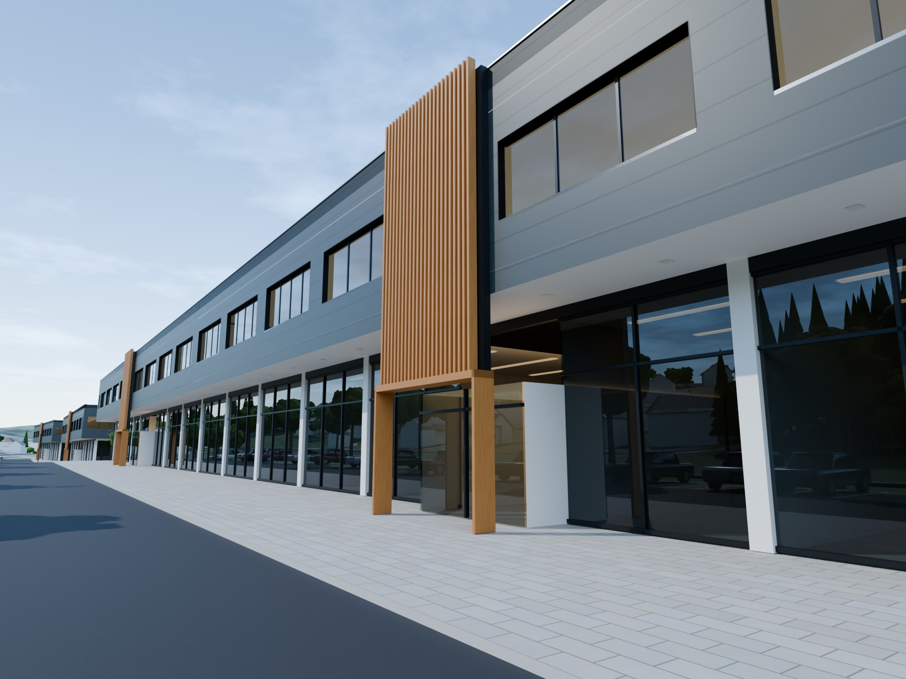

Die Bauteile 1 bis 4 an der B54, eingebettet in Gelände, Nachbarschaft und Landschaft von Pischelsdorf am Kulm. Diese Seite dient nur zur Prüfung des Modells, sie ist kein Website-Entwurf.
Frei drehen und zoomen
Ziehen zum Drehen, Scrollen oder zwei Finger zum Zoomen, rechte Maustaste oder zwei Finger zum Verschieben. Vereinfachte Web-Fassung (ca. 1,5 MB); die Renderings unten zeigen die volle Detailtiefe.
Ansichten
Panorama Richtung Nordwesten, im Hintergrund der Kulm

Übersicht mit Ort und Kulm

Einfahrt Nord, Logotafel an Bauteil 1Bauteil 1 von der B54 mit SteleAbendstimmung

Eingang mit Holzlamellen
Was belegt ist und was angenommen wurde
Aus dem Plan
Entwurf 3 vom 25.10.2025: Erdgeschoss 47,99 × 25 m, Obergeschoss 49,99 m mit 2 m Auskragung zur B54, Höhen +5,00 / +9,00 / +9,50, eingeschossiger Lagerstreifen hinten. Bauteil 2 spiegelgleich zu Bauteil 1. Lage der Bauteile nach Übersicht M 1:1000.
Angenommen
Bauteile 3 und 4 als gleicher Gebäudetyp (keine Grundrisse). Fassaden, Holzlamellen und PV-Module nach den vorhandenen Renderings. Stellplätze, Zufahrten, Platz, Bäume, Stelen und Fahrzeuge sind Gestaltungsvorschläge.
Umgebung
Gelände, Orthofoto, Gebäude und Straßen aus offenen Daten. Nachbargebäude vereinfacht, Höhen und Dachformen geschätzt. Keine Mieter- oder Firmennamen dargestellt.
Fragen für das Review
Stimmen Lage und Ausrichtung der Bauteile auf dem Grundstück?
Sind Bauteile 3 und 4 im gleichen Gebäudetyp richtig angenommen?
Wo liegen die tatsächlichen Zufahrten von der B54?
Passen Fassadenfarben, Holzlamellen und PV-Module zum aktuellen Planungsstand?
Dürfen Stele und Logotafel so gezeigt werden?
Ist die Veröffentlichung von Modell und Renderings mit dem Planverfasser abgestimmt?